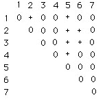
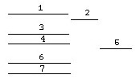
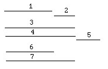
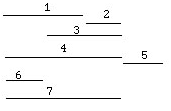
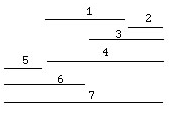

Rather than discussing Benzer's problem abstractly, let us examine a concrete example and then compare the solutions of Benzer (1959) and Gilmore and Hoffman (1964). Readers unfamiliar with the genetic mapping experiments are referred to Benzer (1961). Generally, we can explain these experiments by indicating that mutations in a chromosome which overlap will not be capable of recombining to form a prototroph while nonoverlapping deletion mutants can recombine to form prototrophic recombinants (+) or the absence of prototrophic recombinants (0). Stansfield (1969) presents the following data (p. 213) from such an experiment:
Table I. Data from a "Benzer experiment"

The matrix elements could be completely filled in; however, because of symmetry around the diagonal, this process would only provide redundant information. Secondly, the diagonal is unnecessary information because no deletion mutant can recombine with itself to form a prototroph.
Traditionally, to begin to solve this problem, Row One is analyzed for overlaps because it contains
the most information of any of the rows. Thus, since Deletion Number 1 overlaps with 3, 4, 6 and-7
(because they all have zeroes in the matrix) and does not overlap with Deletion Numbers 2 or 5, we
can draw the following map of the deletions (Figure 1).

Figure 1. Topograph of row 1, Table I.
In each successive step, this topographic map is modified by shortening or lengthening each of the lines (as required) representing a deletion or, in some cases, literally transposing a deletion line to the right or left.
If we proceed to the next steps, we see several such modifications. Thus, in analyzing Row 2,
Deletion 5 has to be moved completely and Deletions 3, 4 and 7 have to be elongated (Figure 2).

Figure 2. Topograph modified by row 2 (Table I) data.
Conversely, shortening of Deletions 6 and 3 is necessary after examining Row 3 (Figure 3).

Figure 3. Topograph modified by row 3 (Table I) data.
Luckily, Row 4 does not require any modification of our topograph. On the other hand, the data in
Row 5 requires substantial revision; we must now transpose Deletion 5 all the way to the left and
extend both Deletions 6 and 7 to the left accordingly to now overlap Deletion 5.

Figure 4. Topograph modified by row 5 (Table I) data.
Similar to the case of Row 4, neither the data in Row 6 or Row 7 (a diagonal element only) necessitates modification of our topograph. It should be noted in passing that the absolute length of any deletion line is arbitrary and that we do not have any reason for assigning the overall left-right orientation. This traditional ad hoc solution of "Benzer's problem" did not allow a student to process a given piece of information only once. In order to solve a problem this way, the student must conscientiously retrack all her previous steps at each successive step. Thus, as above, this frequently involves multiple lengthening, erasing, and transposing different deletion lines. In addition, this usually requires a fabulous memory of what you've done before and/or constant rechecking. Furthermore, the arbitrary lengths of lines yield solutions that are not parsimonious. More intervals of the linear chromosome may be illustrated in a solution than are defensible based solely on the original matrix of data.